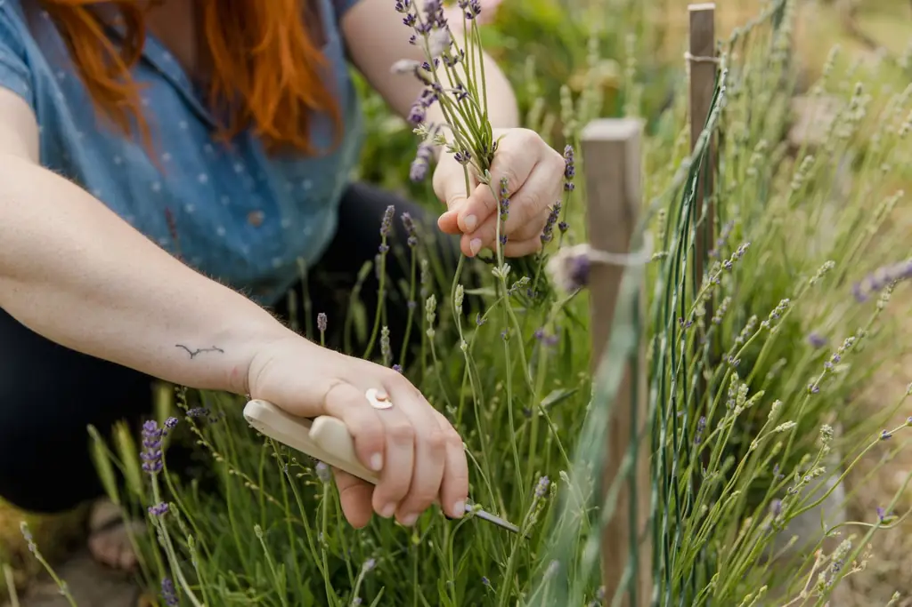

Conception de jardin sec
Plan de plantation selon votre sol, l'exposition, le mistral et le temps que vous voulez y consacrer.
Un jardin beau en plein mois d'août, même quand l'arrosage est interdit.
Les étés sont plus secs et les restrictions d'eau plus fréquentes. Nous créons des jardins de garrigue qui aiment la chaleur : lavandes, cistes, oliviers, graminées, paillage minéral. Une fois bien installés, ils se contentent de très peu d'eau.
Visite et conseil gratuits. Meilleure saison pour planter : l'automne.

Cliquez sur votre situation : le formulaire se remplit tout seul.
Nos prestations
Plan de plantation selon votre sol, l'exposition, le mistral et le temps que vous voulez y consacrer.
Couvre-sols, thyms, graminées et prairies sèches à la place d'une pelouse gourmande en eau.
Lavandes, cistes, romarins, sauges, oliviers, choisis en pépinière pour leur robustesse.
Gravier, pierre locale ou broyat pour garder l'humidité et limiter les herbes.
Goutte-à-goutte programmé pour l'installation, puis réduit ou coupé.
Cuves enterrées ou apparentes, raccordées au réseau d'arrosage.
Comment ça se passe
Sol, exposition, vent, vos envies et votre temps disponible.
Liste des plantes, visuels, période idéale de plantation.
Préparation du sol, plantation, paillage, arrosage de démarrage.
Deux visites pour ajuster l'arrosage et remplacer ce qui n'a pas pris.
Réalisations récentes
Villeneuve-lès-Avignon · Villa
Gordes · Mas
L'Isle-sur-la-Sorgue · Maison de village
Nos engagements
Lucie Fabre, paysagiste, spécialiste des jardins secs
« Plus de pelouse jaune en août. Le jardin de graminées est magnifique et on n'arrose presque plus. »
« Notre mas reste inoccupé des semaines. Le jardin sec autour de la piscine se débrouille très bien sans nous. »
Questions fréquentes
Votre question n'est pas là ?
Appelez-nous au 04 65 71 81 44.
Un jardin composé de plantes adaptées à la chaleur et à la sécheresse, comme celles de la garrigue. Une fois bien installées, souvent après un ou deux étés, elles n'ont besoin que de très peu d'arrosage, voire aucun.
L'automne est la meilleure saison : les pluies aident les racines à s'installer avant l'été. Le début du printemps est possible, avec un arrosage de démarrage plus suivi.
Par des couvre-sols (thyms, achillées, zoysia), des prairies sèches ou des graminées, ou par du paillage minéral avec des massifs. Nous vous conseillons selon l'usage : jeux d'enfants, passage, décor.
Les règles dépendent de l'arrêté préfectoral en vigueur et du niveau d'alerte. L'arrosage au goutte-à-goutte est parfois autorisé à certaines heures. Un jardin sec limite fortement ce souci.
Moins qu'un jardin classique : une taille légère des lavandes et des cistes après floraison, et un désherbage limité grâce au paillage.
Oui, surtout pour arroser les jeunes plantations et le potager. Une cuve se remplit avec les pluies d'automne et de printemps.
Lavande, romarin, cistes, thym, oliviers, graminées et vivaces adaptées au sec. Le bon choix dépend de l'exposition et du sol, que nous observons lors de la visite.
Il est utile les premiers étés, le temps que les racines s'installent : il arrose au pied des plantes et économise l'eau. Il peut ensuite être réduit, voire supprimé, une fois le jardin établi.
Devis gratuit
Surface, exposition, ce que vous aimeriez. On vous rappelle pour fixer une visite-conseil gratuite.
Du lundi au vendredi, 8 h à 18 h
7 rue des Teinturiers, 84000 Avignon
Nous intervenons à Avignon, Le Pontet, Villeneuve-lès-Avignon, L'Isle-sur-la-Sorgue, Cavaillon, Carpentras, Gordes, Saint-Rémy-de-Provence, Luberon.